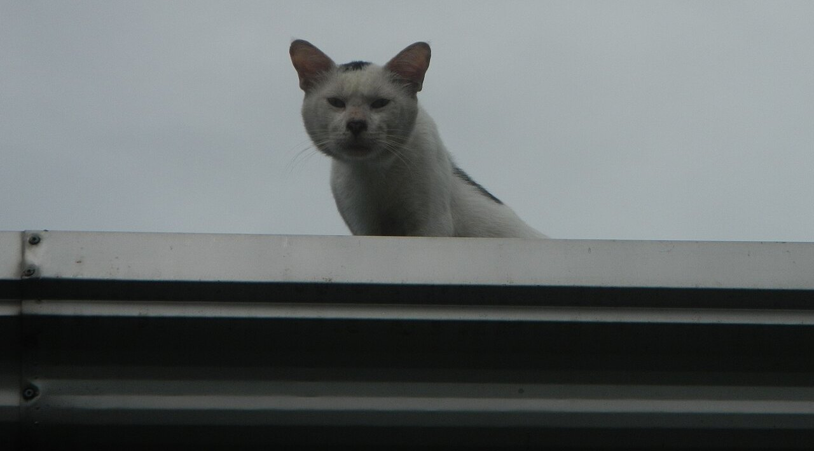
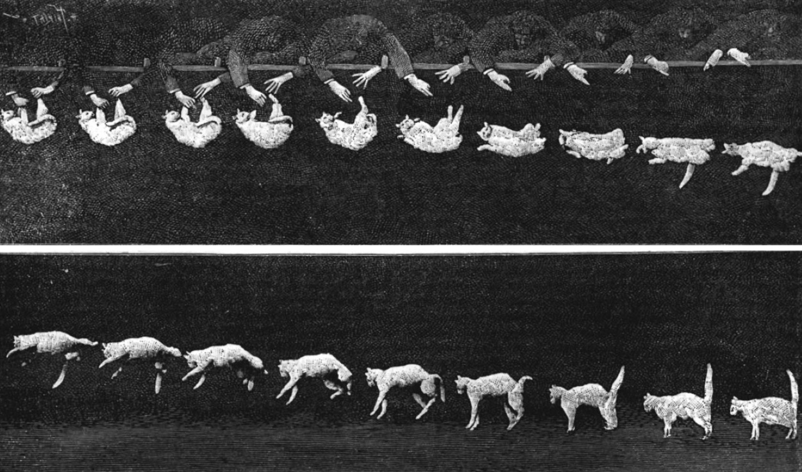
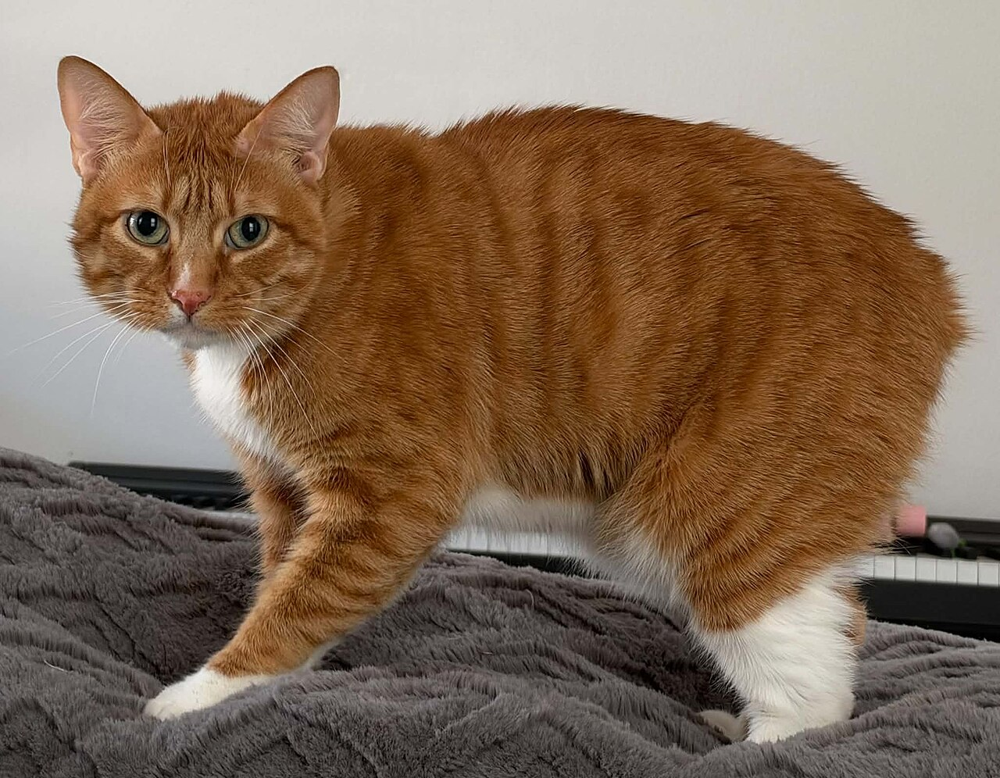
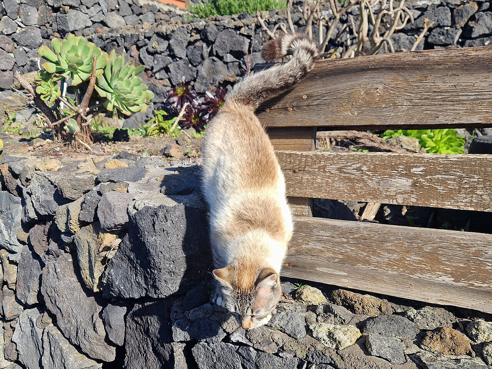
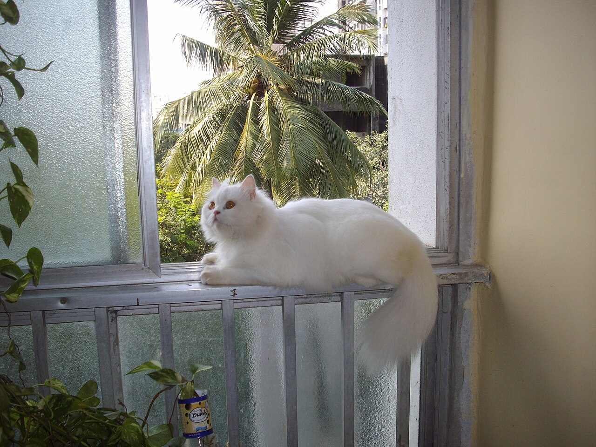
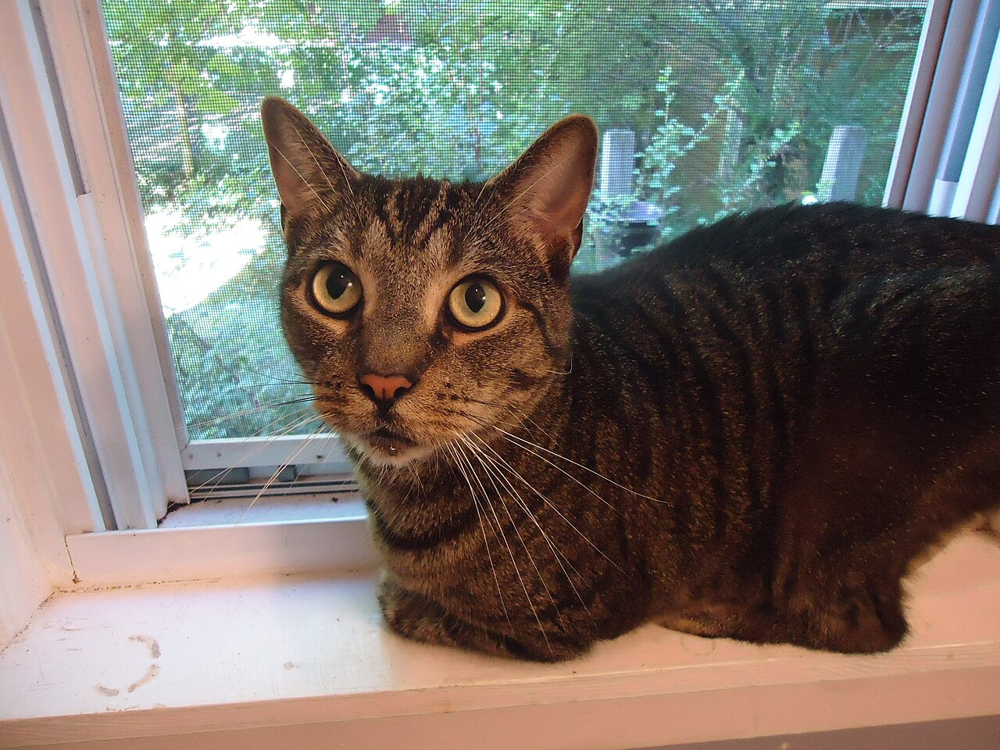
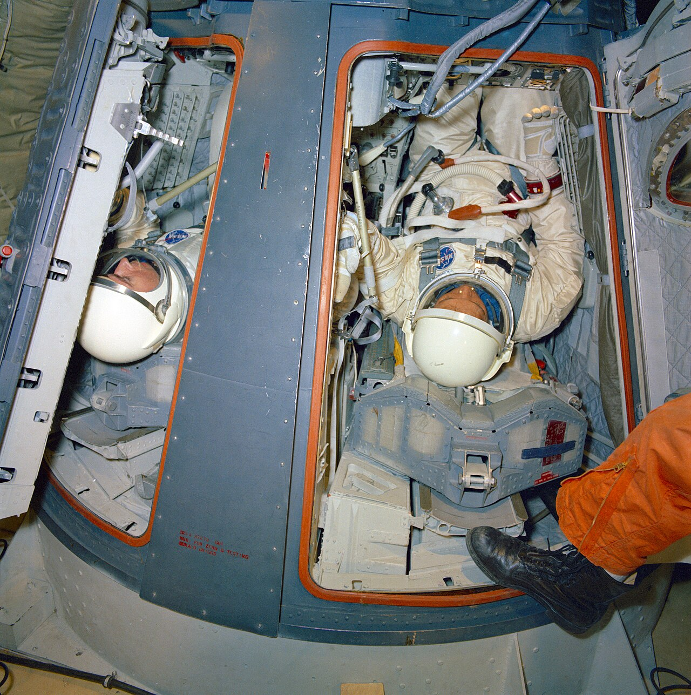

フランス・パリ、1894年。場所は、ブローニュの森にあった生理学者エティエンヌ＝ジュール・マレーの研究所です。白い猫が足を持たれて背中を下に向けられ、そっと放されました。その一瞬を、マレーは連続写真を撮るカメラで写したのです。
写真には、猫が空中で体をひねり、地面に着く前に4本の足を下へそろえる姿が写っていました。猫が足から着地することは、昔から知られていました。でも、つかまる物のない空中で、どうやって向きを変えているのでしょう。そして、高い所から落ちても、猫は本当に平気なのでしょうか。

背中から落ちても、猫は空中でくるりと向きを変え、足から下りてきます。1894年の連続写真と、ひねり方のコマの図、人とくらべた落ちる速さのグラフで、そのしくみを確かめます。でも、高い階から落ちた猫ほどけがが軽いというデータには、落とし穴がありました。
フランス・パリ、1894年。場所は、ブローニュの森にあった生理学者エティエンヌ＝ジュール・マレーの研究所です。白い猫が足を持たれて背中を下に向けられ、そっと放されました。その一瞬を、マレーは連続写真を撮るカメラで写したのです。
写真には、猫が空中で体をひねり、地面に着く前に4本の足を下へそろえる姿が写っていました。猫が足から着地することは、昔から知られていました。でも、つかまる物のない空中で、どうやって向きを変えているのでしょう。そして、高い所から落ちても、猫は本当に平気なのでしょうか。
猫は目と耳の奥の感覚で上下を知り、体を前と後ろの2つに分けて交互にひねることで、空中で足を下に向けます。体が軽く、落ちる速さにも上限があるので、人よりけがをしにくいのは確かです。ただし「平気」ではありません。落ちて病院に運ばれた猫の調査では、骨折などの大けがが多く見られます。
空中の猫がまず確かめるのは、どちらが下かです。手がかりは目と、耳の奥にある「前庭（ぜんてい）」という、体の傾きを感じるしくみ。下がわかると、猫は「立ち直り反射」と呼ばれる動きを始めます。考えてからするのではなく、体が自動で動くのです。
こつは、背中を真ん中で曲げて、体の前半分と後ろ半分を別々に回すことです。猫の背骨はとてもやわらかく、鎖骨は小さくて肩の骨とつながっていないので、体を大きくねじることができます。
まず前足を縮め、後ろ足を伸ばして、前半分を回します。次に足の形を入れかえて、今度は後ろ半分を回します。必要なら、これをくり返して、背中が上になるまで向きを変えます。

マレーの写真は、物理学者たちを悩ませました。手から放された瞬間、猫は回っていなかったからです。回っていない物は、何かを押したり押されたりしないかぎり、ひとりでに回りはじめることはできません。これを「角運動量（回る勢い）の保存」といいます。
しくみは、回転いすで試せます。いすに座って足を床から浮かせ、両腕を胸に縮めたまま、上半身を右へひねってみてください。いすにのった下半身は、少しだけ左へ回ります。全体の回る勢いはゼロのままなので、一方を回すと、もう一方が反対へ回るのです。
次に、腕を大きく横に広げ、今度は下半身を右へひねります。腕を広げた上半身は回りにくいので、左へはほんの少ししか戻りません。この2つをくり返すと、回る勢いはゼロのまま、体全体の向きが少しずつ右へ変わっていきます。
猫も同じです。前足を縮めた前半分は回りやすく、後ろ足を伸ばした後ろ半分は回りにくい。前半分が90度回るあいだ、後ろ半分は反対向きに10度ほどしか回らないとされます。次は足の形を入れかえて、後ろ半分を回します。
1969年、アメリカ・スタンフォード大学のケインとシェアは、猫を「つながった2本の円柱」と考えて計算し、落ちる猫の動きを数式で説明しました。
しっぽを振り回して勢いを打ち消している、という考えもありました。けれども、しっぽのない猫も空中で向きを変えられます。しっぽは助けにはなっても、主役ではないのです。

物は落ちるほど速くなります。でも、速くなるほど空気の抵抗（風に押し返される力）も強くなり、やがて重さとつり合うと、それ以上は速くなりません。このときの速さを「終端速度」といいます。
終端速度は、体の重さのわりに空気を受ける面が広いほど、遅くなります。猫は人よりずっと軽く、手足を広げると、重さのわりに面が広くなります。手足を広げた猫の終端速度は時速約97キロとされ、人の時速約190キロのおよそ半分です。
着地の瞬間にも準備があります。猫は足を下にそろえ、背中を丸めて地面を待ちます。体が軽いので、同じ速さでぶつかっても、受ける衝撃は人よりずっと小さく済みます。

1987年、ニューヨークの動物病院「アニマル・メディカル・センター」の獣医2人が、5か月のあいだに建物から落ちて運ばれてきた猫132匹を調べました。治療を受けた猫の90%が助かりました。
不思議だったのは、高さとけがの関係です。1匹あたりのけがの数は、7階まではおおむね高いほど増えたのに、それより上では減っていました。報告は、5階ぶんほど落ちると終端速度に達し、猫が体の力を抜いて手足を広げるからではないか、と考えました。
ただし、この数字には落とし穴があります。調べたのは、病院に運ばれた猫だけ。落ちてすぐに死んでしまった猫は、病院に連れて来られません。高い階ほど、そうした猫が数字から抜け落ちていた可能性があると指摘されています。助かった例だけを見てしまう、この偏りを「生存者バイアス」といいます。
実際、2004年に発表された、クロアチア・ザグレブ周辺の猫119匹の研究（1998〜2001年）では、逆に7階以上から落ちた猫ほど、胸などのけがが重い傾向が見られました。高い所から落ちて平気、とはとても言えません。
危ないのは、猫が高さをあまり怖がらないことです。窓辺やベランダの手すりにも平気でのり、窓の外の鳥などに気をとられて、足をすべらせることもあります。2階ほどの高さでも、猫はけがをします。
アメリカの動物愛護団体 ASPCA は、窓にしっかりした網戸をはめるよう呼びかけています。1987年の調査をした動物病院（AMC）も、網戸のない窓は閉め、猫をベランダに出さないよう勧めています。


2004年に発表されたクロアチアの研究で、119匹のうち足を骨折していた猫の割合（骨盤を除く）Vnuk ほか、2004年
同じ研究で、助かった猫の割合。ただし、3匹に1匹は胸にもけがをしていたVnuk ほか、2004年
同じ研究で、4〜9月の暖かい時期に起きた落下の割合。窓やベランダを開けることが増えるため、と研究者は考えているVnuk ほか、2004年

無重力の宇宙では、つかまる物がないと、体の向きを変えるのもひと苦労です。そこで注目されたのが、猫でした。1962年、アメリカ空軍の研究所は、無重力で人が自分の体を回す方法をまとめた報告書を出します。9つの動きのうち1つの名は、「キャット・リフレックス（猫の反射）」でした。
1968年には、ケインが宇宙服を着た体操選手にトランポリンの上で猫のひねりをまねさせ、その写真が雑誌『LIFE』に載ったと伝えられています。翌1969年、猫の論文と同じ年に、2人は無重力の中で人の体がどう動き、どちらを向くかを数式で調べた報告も、NASA 向けにまとめています。
ところが、空軍はそれより前の1950年代に、無重力をつくる飛行機で猫を浮かべる実験をしていました。当時の記録映像のナレーションは、無重力では猫の立ち直りの反射が「ほとんど失われる」と伝えています。猫の技は、上下がわかってこそ働くものだったようです。
猫を飼っているなら、窓の網戸がしっかりはまっているか、一度確かめてみてください。130年あまり前に物理学者たちを悩ませた空中の技も、高い窓の外では猫を守りきれません。